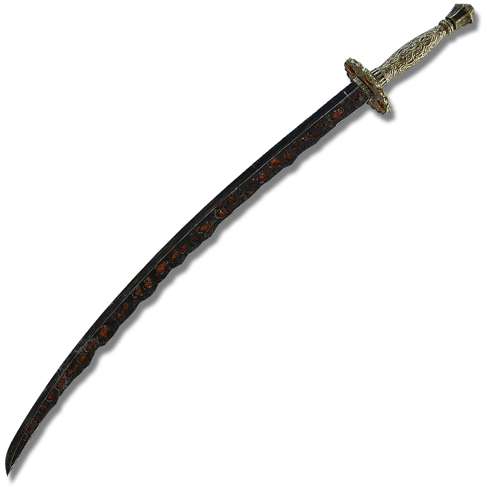
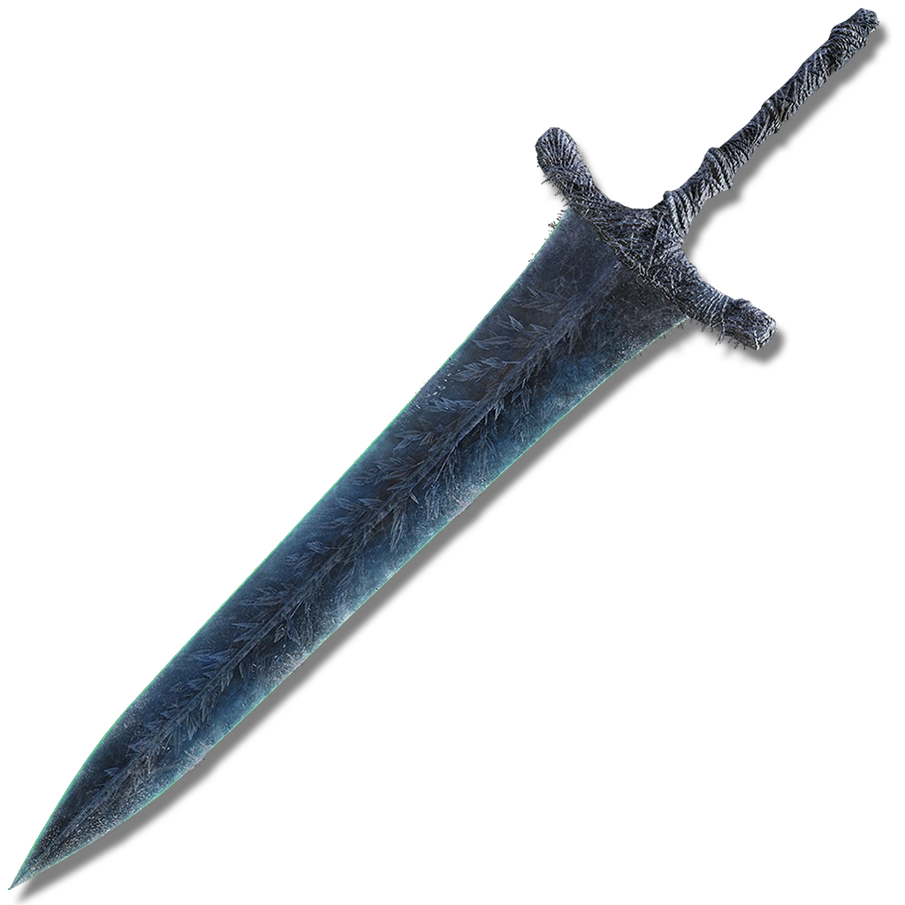

| Rivers of Blood | Descripción |
|---|---|
Rivers of Blood es una Katana en Elden Ring. Rivers of Blood escala principalmente con fuerza,
destreza y arcano y es una buena arma para el combate de rango medio y es capaz de infligir ataques de
corte y perforación.
|
|
| Katana de Meteorito | |
|  | Katana forjada a partir de mineral de meteorito y que puede acabar con las formas de vida nacidas de estrellas caídas. |
| Espadón de la Luna Negra | |
|  | Espadón de la luna otorgado por las reinas carianas a sus cónyuges según una longeva tradición. |
Vídeos de demostración de algunas armas
- Katana Rivers of Blood
- Arco
- Espadón de la Luna Negra